Techno Metal Post offers a modern, reliable alternative to traditional concrete foundations. Our galvanised steel helical piles are precisely screwed into the ground to the correct depth, providing solid support and long‑lasting stability for any type of structure.
Our foundation system
Our foundation system uses helical piling technology, not ground screws. our helical piles benefits from a BBA certification and are approved by Registered Building Control Approvers and Local Authorities Building Controls.
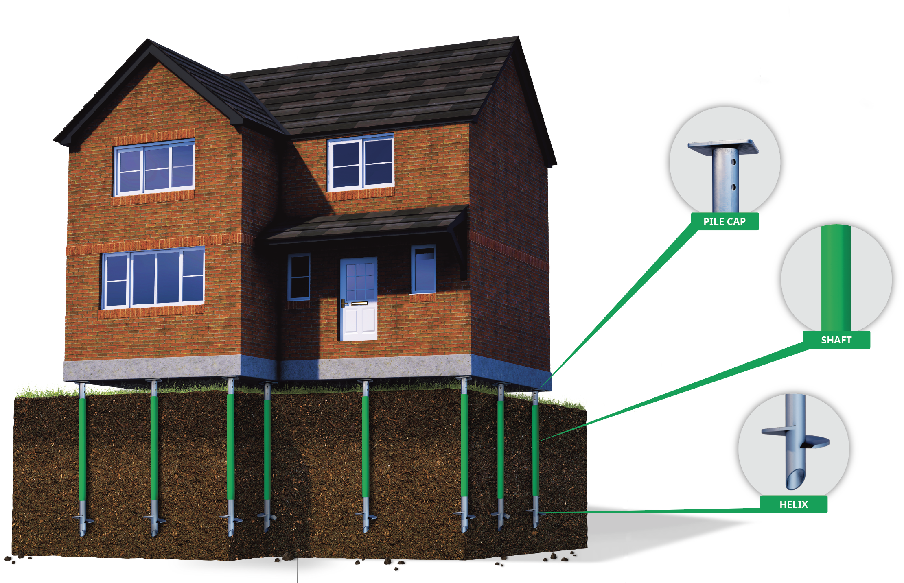
Helical Pile Foundations
We design, manufacture and install high‑performance helical piles made from premium North American and European structural steel. Our helical piles are engineered, tested, and installed using proprietary hydraulic machinery operated by certified installers across the UK.
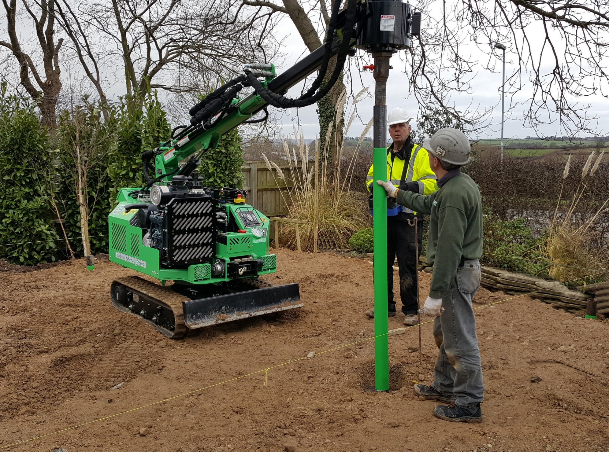
Helical Pile Installation
Every project deserves a strong, dependable foundation. That’s why all our installations are carried out by certified Techno Metal Post professionals. During installation, torque is precisely measured to calculate the exact load capacity of each pile, ensuring your structure is safely supported according to on site soil conditions and stuctural engineers requirement.
Different pile diameters
Every project is unique. Our certified installers supported by our in-house engineering team select the right pile size based on the required load capacity and soil conditions. Our range of piles can support from 0 to 15 tons, ensuring strength, stability and complete peace of mind whatever your project.
Built for the United Kingdom
Whatever the soil conditions, from rocky ground to water‑logged clay, Techno Metal Post has the right pile for your project. Quick to install, eco‑friendly, and ready to build on immediately, our helical foundations are the smarter choice for any building project (garden rooms, extensions and refurbishment, new build, boardwalks, underpinning etc.).
Why choose TMP?
Simple, Fast & Affordable
Our helical pile foundations are installed by trained and certified professionals using our specialised hydraulic equipment. This quick, clean method eliminates the need for digging the ground, remvoving spoil and pouring concrete. You can start building as soon as our installer complete the installation. By saving time, you save money.
No Excavation & Perfect for Tight Spaces
Techno Metal Post’s range of dedicated hydraulic machines allows installations in even the most restricted areas. Our equipment is engineered for precision and reliability, and in most residential projects, no excavation is required.
Low Environmental Footprint
More and more homeowners and builders are choosing Techno Metal Post as a sustainable alternative to concrete foundations. Here’s why our system helps reduce environmental impact:
- Less concrete = less CO₂
- Minimal disruption
- Eco‑friendly installation equipment
- The go to technology for tree protection order situations
In-House Engineering
Our engineering team analyses each project and recommends the most suitable foundation solution. They also ensure every installation meets all local authorities Building standards.
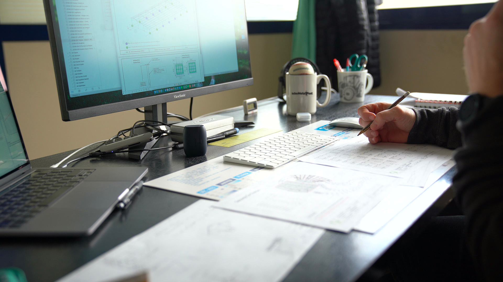
Building code compliant
Techno Metal Post helical piles are fully code compliant and accepted by RBCA and Building Authorities across the UK, making your project simpler from start to finish.
Types of projects
Extensions
Our helical pile system offers a fast and eco‑friendly foundation solution for home extensions. Compact, specialised equipment ensures minimal disruption to gardens, patios or existing structures. The result: a clean, efficient and cost‑effective foundation process from start to finish.
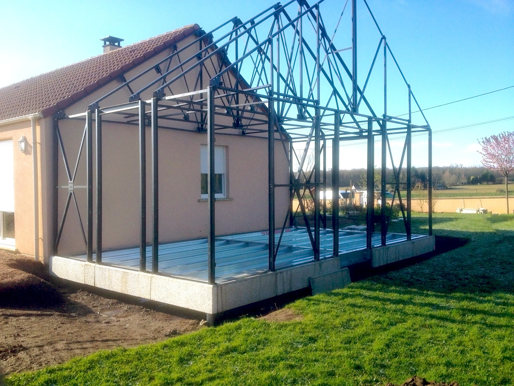
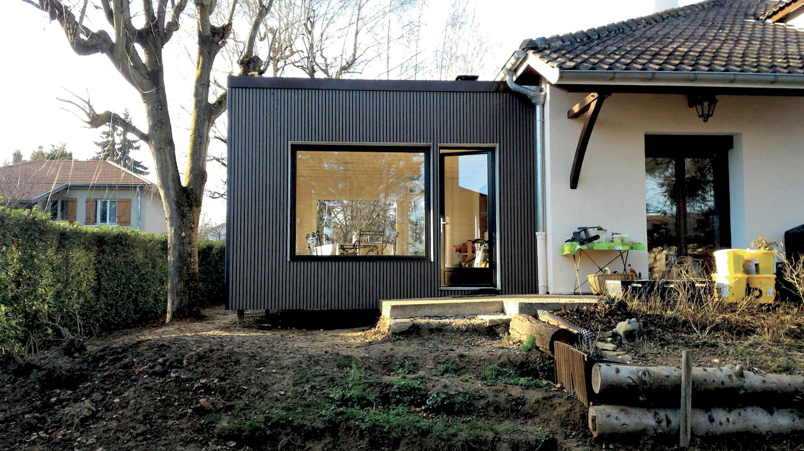
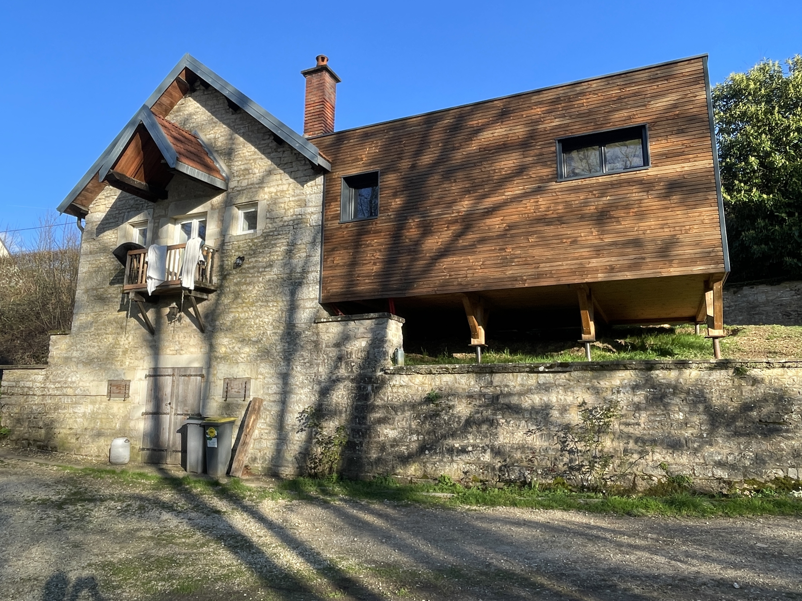
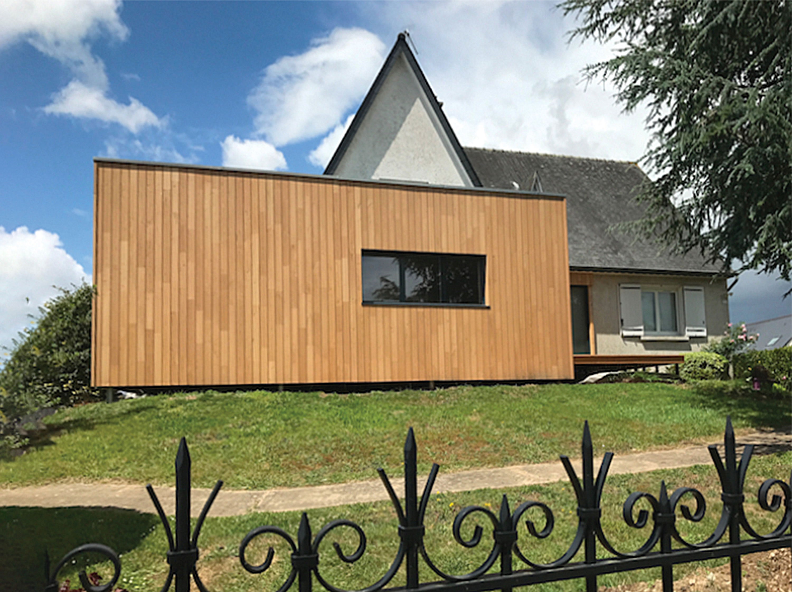
Timber Frame and SIP’S House and Cabin
A solid foundation is key to the longevity of any timber‑frame building. TMP helical piles offer secure, long‑lasting support that adapts to any soil conditions, even on sloped or uneven ground, ensuring your project is built to last.
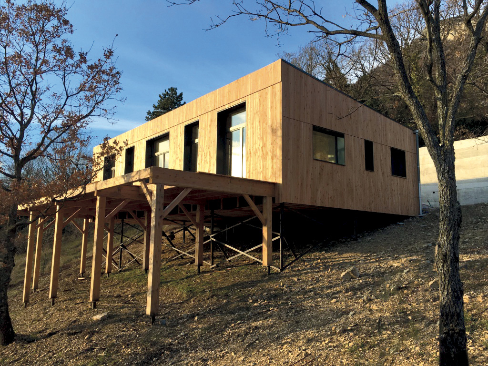
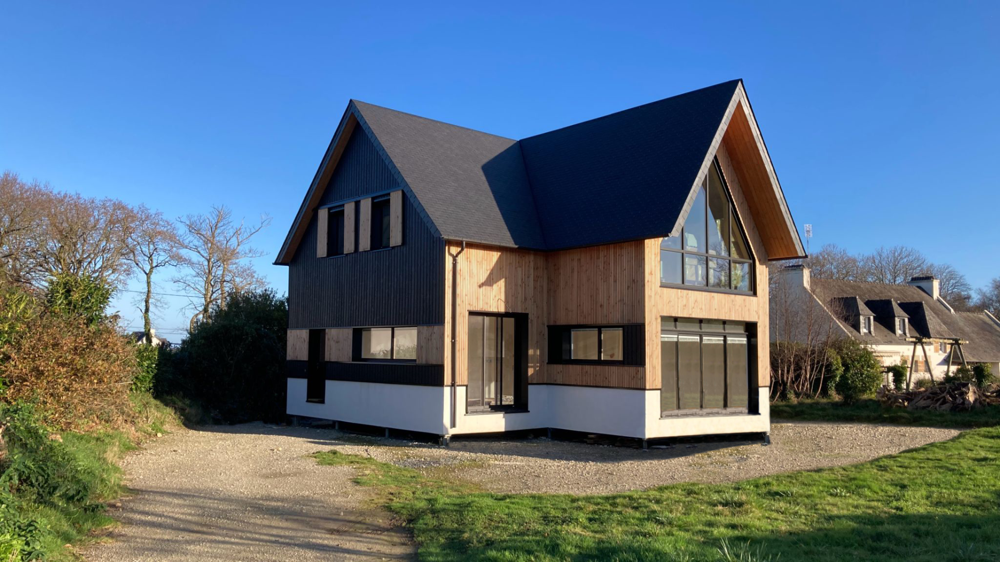
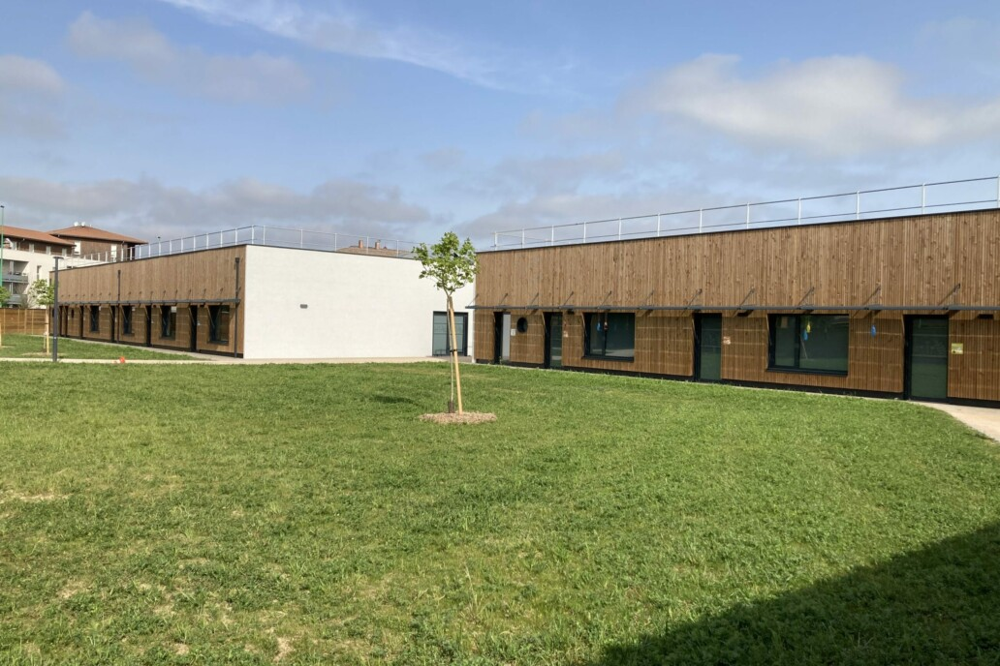
Helical Piles Supporting Concrete Foundations
When Building requirement requires concrete, Techno Metal Post provides deep foundations to support reinforced concrete beam and slabs. It minimise the amount of excavation and concrete. This method delivers a stable foundation even in weak or unstable soil conditions.
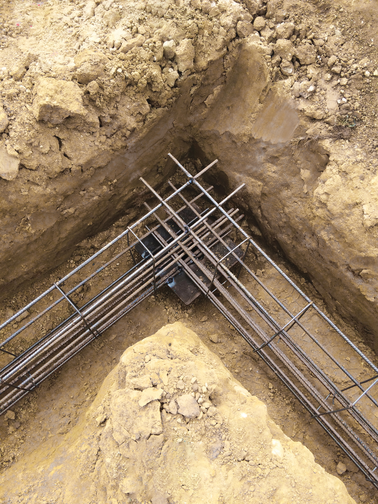
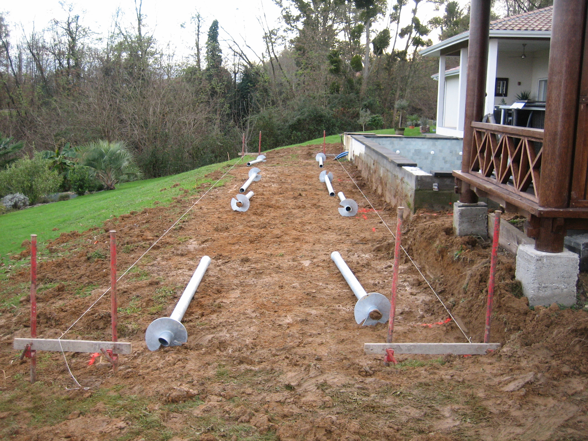
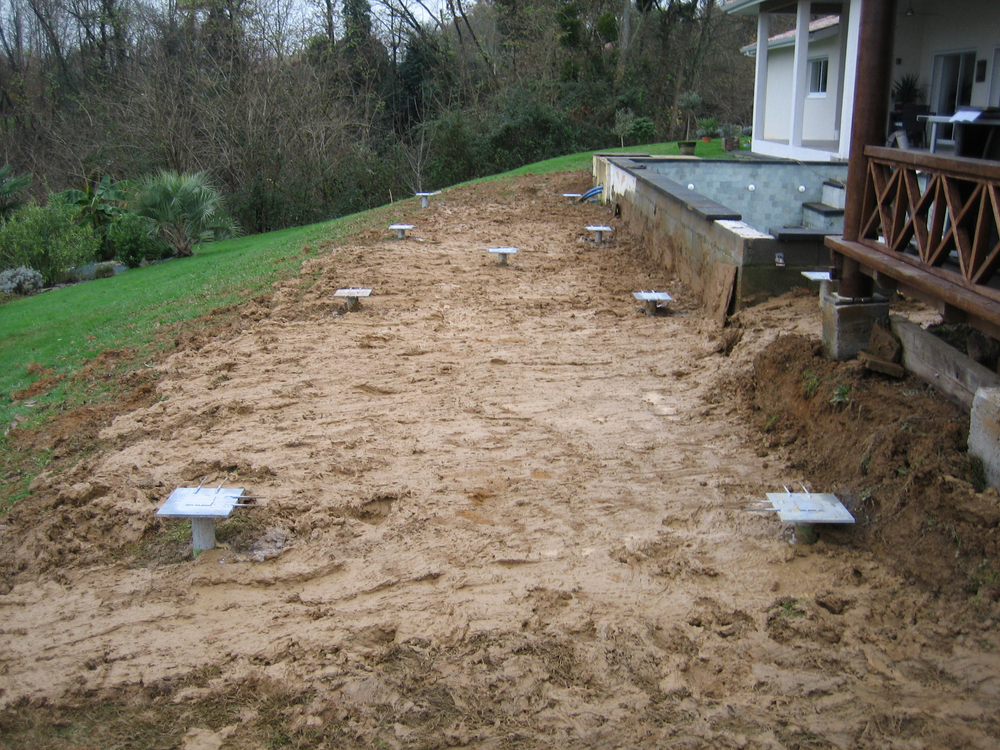
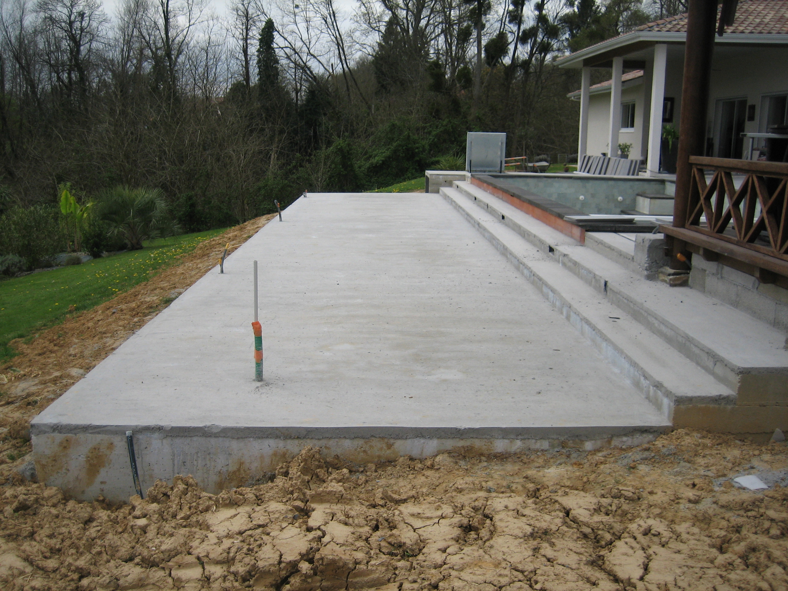
Modular Buildings
Increasingly popular, modular homes, built indoors and assembled on site, are perfectly suited to Techno Metal Post’s helical pile foundations. Installation is fast, accurate and ensures a strong, durable, and level base, even on challenging terrain.
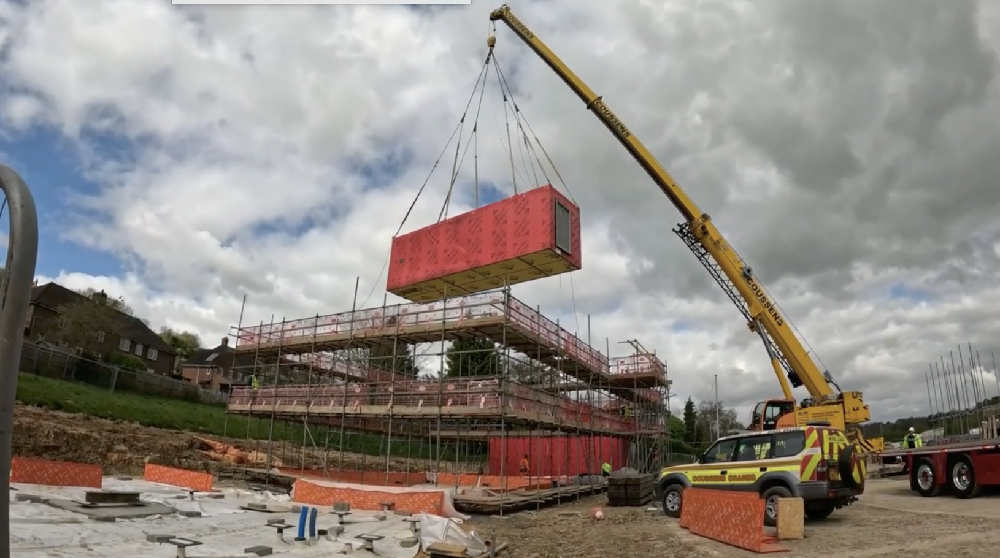
Frequently asked questions
Do I need a soil survey?
The need for a soil survey will depend on the planning authority in your area. Some smaller residential projects may not require one. Techno Metal Post installers can carry out on site torque reading test to assess ground condition. A torque reading test remove the risk of variations or orverruns for your project.
How much do helical piles cost?
The cost of a pile depends on the type of project and the depth required to achieve a solid, load‑bearing foundation.
When considering the time and cost of excavation, spoil removal and concrete curing, helical piles are most often economical than traditional concrete foundations. Contact us and we’ll be delighted to review your project and provide a budget estimate.
Why choose a helical pile foundation instead of concrete?
Using helical piles saves both time and money, there’s no need for excavation, no concrete curing time, no spoil removal and no post‑installation adjustments. Techno Metal Posts provide ready‑to‑build foundations that ensure long‑term stability, heave protection and help prevent future costs related to soil movement.
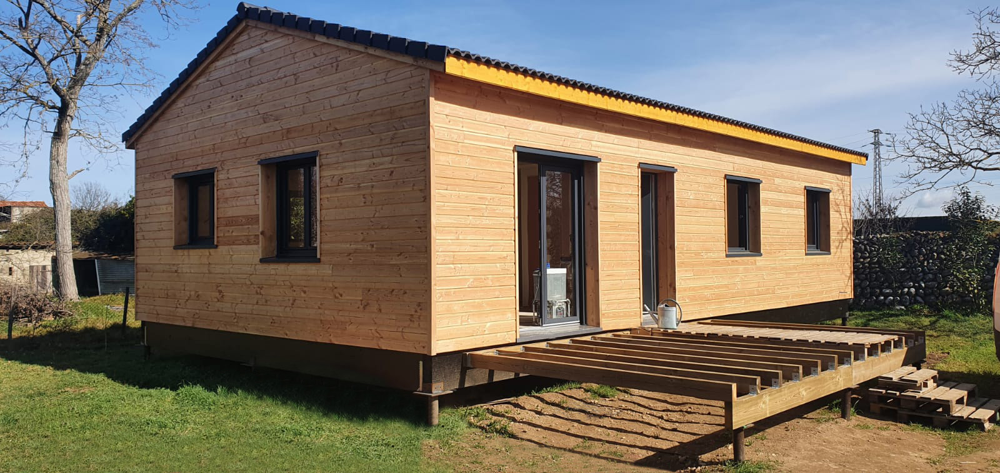
How long does installation take?
Techno Metal Post installation is exceptionally quick and precise. For example, we can install the foundations for a 250 m² double‑storey house in just a few days. The installation time varies depending on the type of project, soil conditions, number of piles and site accessibility.
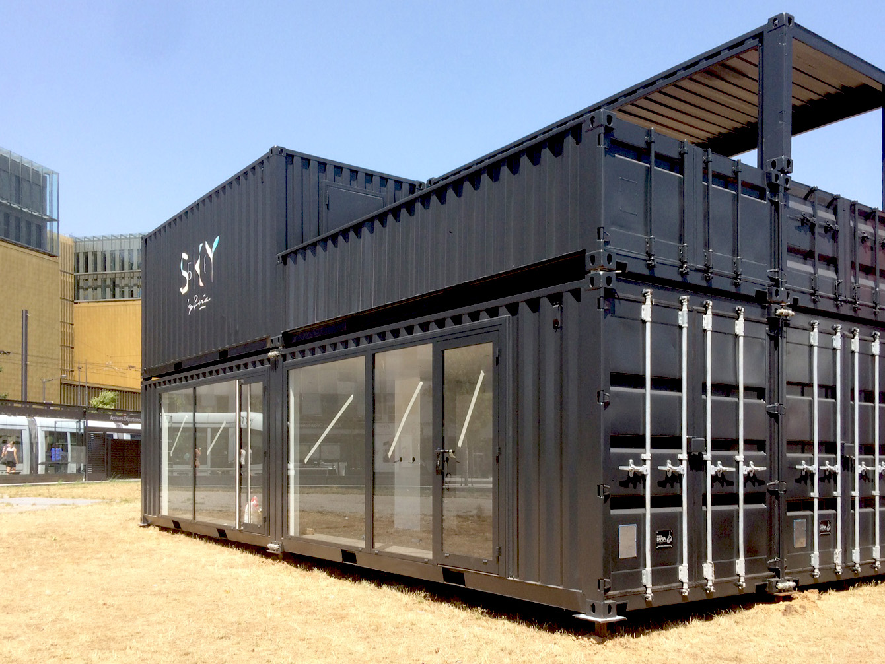
Can helical piles be installed in rocky soil conditions?
Yes. Our installation equipment can drive piles through soil containing small to moderate‑sized rocks. Our machines generate sufficient torque for the piles to shift or cut through these obstacles. In cases of shallow bedrock or larger rocks, a specialised anchoring system can be used.
What do I need to provide to get a quote?
Techno Metal Post provides a budget estimate based on preliminary ground floor plans. As your project progresses, with loads from your structural engineers, possibly with an independent soil survey or with a Techno Metal Post torque reading test, Techno Metal Post provides a firm quote.